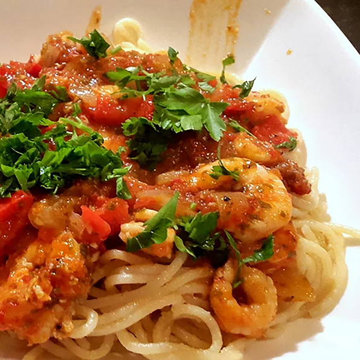

Shrimp Spaghetti

Shrimp Spaghetti With Tomatos
A delicious spaghetti dish with tomato sauce
Ingredients:
You will need the following ingredients to prepare this recipe;
- 20 large shrimp, deveined with shell and head left on
- 4 tomatos, or more to taste
- 1 bunch flat-leaf parsley, divided
- 0.25 cup extra-virgin olikve oil
- 1 large onion, chopped
- 1 red bell pepper, chopped
- 1 fresh chile pepper, finely chopped
- 4 large cloves garlic, sliced, or more to taste
- 0.5 cup water
- 2 tablespoon tomato paste
- 1 tablespoon dried oregano
- salt and ground black pepper to taste
- 1 teaspoon parrika
- 1.7 pounds spaghetti (Optional)
Directions/Steps:
- Peel shrimp and place skin, heads, and tails into a large saucepan. Fill pan with water and bring to a boil. Reduce heat to low and let simmer, about 45 minutes.
- Combine tomatoes and 0.5 the parsely in a blender; puree until smooth.
- Heat olive oil in a separate pan over medium heat. Add onion, bell pepper, and chile pepper; cook and stir until softened, about 5 minutes. Add garlic; cook until fragrant but not browned, 1 to 2 minutes.
- Pour pureed tomato mixture into the pan with the pepper. Add water, tomato paste, oregano, salt, and black pepper. Stir well; add paprika. Let sauce simmer on low to medium heat until juices have reduced.
- Strain shrimp shells from the water. Bring water to boil and add spaghetti. Cook spaghetti, stirring occasionally, until tender yet firm to the bite, about 12 minutes. Reserve 1 cut of the cooking water and drain the rest.
- In the meantime, add shrimp to the tomato sauce. Add the reserved water, stir well, and cook until shrimp is pink,about 3 minutes. Plate spaghetti and spoon the sauce on top; garnish with the remaining parsley.
Cook's Notes:
Pick sweet and juicy tomatoes, if possible.
You can substitute 8 fluid ounces of tomato passata for the tomato paste and omit the water.